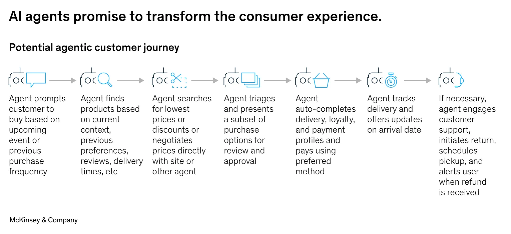
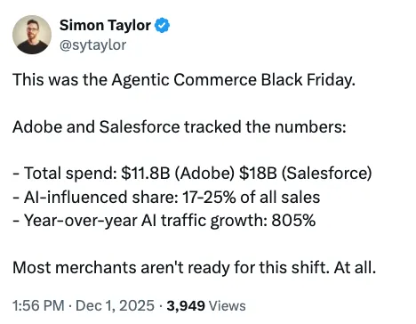
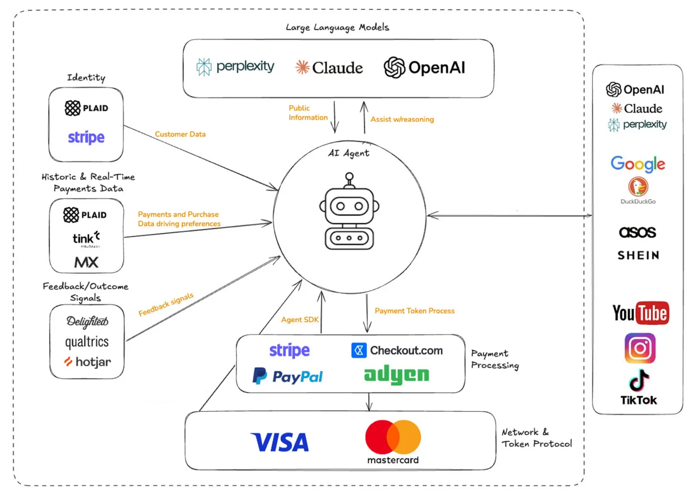

You’re scrolling through your phone, and instead of spending 2 hours comparing prices across 12 different websites for that new laptop, you just tell your AI assistant:
“Find me a laptop under 1200€ with good specs for video editing. I prefer to buy from shops with good return policies.”
And then... it does.
Not just “here are some options.” It actually finds the best deal, checks reviews, verifies the return policy, and completes the purchase. While you were grabbing coffee.
Sounds too much?
It’s not. It’s happening right now.
This is Agentic Commerce.
Agentic commerce
By now, you already know that the Internet changed the way you bought things. Instead of physically going to stores, you can browse and buy from your couch basically anything that you want.
Agentic commerce is the next evolution. Instead of you browsing and buying, AI agents do it for you.

The agents are able to:
Search for products across the entire internet
Compare prices, features, and reviews in seconds
Negotiate deals (yes, really)
Complete the purchase on your behalf
Track your order and handle returns
AI doesn’t just help you find what to buy. It helps you buy it.
We’re talking about AI agents talking to other AI agents. Your personal shopping agent negotiating with a shop’s agent. Automatically. 24/7. 365 days.
This is the A2A economy: Agent-to-Agent commerce.
A2A is a protocol developed by Google in the beginning of this year that allows different AI agents to discover each other, understand their capabilities, and work together.
Numbers don’t lie

The big players are already betting billions on this.
Companies are projecting that agentic commerce could generate $3 trillion to $5 trillion globally by 2030. (source)
ChatGPT now has over 800 million weekly users. Google’s AI (Gemini etc) features reach 1.5 billion users per month. These users are discovering products, comparing options and buying them.
Traffic to sites from AI powered browsers and chat services increased 4,700% year-over-year in July 2025.
4,700%.
All those users, now with the possibility of buying things with AI.
Tech arms race
Everyone’s racing to own this new opportunity. To be the first.
OpenAI just launched “Instant Checkout” in ChatGPT. US users can now buy directly from Etsy sellers and Shopify merchants right inside the chat. No website needed. Just chat → buy → done. (source)
Google dropped their Agent Payments Protocol (AP2) in September 2025. It’s an open standard backed by Mastercard, PayPal, American Express, Adobe, and Alibaba that establishes a framework for AI agents to securely make payments on behalf of users. (source)
PayPal launched their own agentic commerce services. Merchants can now be discovered by AI agents across platforms through a single integration. (source)
Visa and Mastercard are building the payment rails for AI agents. Because when your AI buys something, the money still needs to move. (mastercard source)(visa source)
Amazon now let’s shoppers purchase goods from vendors that don’t even sell on Amazon, without leaving the Amazon ecosystem. (source)
This is a complete reinvention of how ecommerce works.
How does this actually work?

You wake up and realize you need a birthday gift for your mom. Instead of spending your lunch break scrolling through endless options, you tell your AI:
“I need a birthday gift for my mom. She loves gardening, hates anything too fancy, budget is $75, and I need it delivered by Saturday.”
Here’s what happens behind the scenes:
Intent Understanding: The AI parses what you want, basically gardening related stuff, practical, under $75, fast shipping
Product Discovery: It searches across Amazon, Etsy, local stores, specialty gardening shops etc
Comparison: It filters by ratings, price, delivery time, return policies
Selection: It picks the best option based on your preferences (learned over time, as you might noticed chatgpt has memories from your previous chats and knows a lot about you already)
Checkout: It completes the purchase using your saved payment method
Confirmation: You get a notification. Done.
Total time? Seconds. Maybe a minute if the AI asks for clarification.
The trust problem
This whole thing sounds amazing in theory. But would you actually let an AI spend your money?
Very few people currently feel comfortable using AI to complete purchases. The top concerns? Security and privacy.
Trust isn’t a nice to have for this. You need it 110%.
And honestly? This is the right response. We should be cautious about giving AI the ability to spend our money.
Who do you trust when you aren’t making the choice?
When you walk into a store, the question is simple: Do I trust this brand? This merchant? This product?
But when an AI shops for you, trust becomes complex. Mixed in layers of data, automation, and systems you don’t understand.
Do you trust:
The AI platform (OpenAI, Google, Anthropic, etc)?
The payment provider (Visa, PayPal, Stripe, etc.)?
The merchant’s reputation?
All of the above working together?
Small businesses have an opportunity
For years, big brands have dominated online commerce. They had the budget for SEO. They could pay for the top ad spots. They could buy attention.
Agentic commerce might actually level the playing field.
AI agents don’t care about flashy ads or big marketing budgets. They need for their inputs:
Product quality
Price
Reviews (they can be faked I know)
Availability
Relevance to what the user asked for
If you’re a small business with a great product at a fair price? The AI might recommend you over a big brand.
Still a long (medium?) way to go
Of course, this is the beginning. And there are some pains/fears in this.
Data quality is everything
If your product data sucks, AI agents won’t find you.
AI agents struggle when for example the same description appears on dozens of sites. They can’t determine authority (who is the best one). So they deprioritize everyone.
You’re not just competing for human attention
In the current (old) world, you optimized for Google (SEO). You ran ads. You built brand awareness.
In the agentic world? Your customer might never see your website. The AI makes the choice for them.
This is both an opportunity and a threat. If the AI recommends you? Great. If it doesn’t? You might not even get a chance to compete.
Who’s liable when things go wrong?
What happens when an AI agent buys by mistake? Violates commercial rules? Makes an unauthorized purchase?
Who’s responsible the consumer, the merchant, or the AI platform?
The privacy minefield
AI agents need access to your data to work effectively. Your preferences. Your purchase history. Your budget. Your payment info. Your address.
That’s a lot of sensitive information concentrated in one place.
Compliance with GDPR and other privacy regulations is already a clusterfuck.
Now add autonomous AI agents on top of it.
What this means for you, me, us
Whether you’re a consumer, a business owner, or just someone curious about where tech is heading, here’s what I think:
For consumers:
You don’t have to jump in immediately. Be cautious. But stay curious.
Start small. Let AI help you research products. Compare prices. Find deals. You stay in control of the final purchase.
As you get more comfortable, you can expand what you delegate.
The people who figure this out early will save massive amounts of time. The people who resist forever will spend hours doing what takes others seconds. (time is the most valuable currency that we have)
For business owners
The time to prepare is now. Not next year. Not when “things settle down.”
Key actions:
Clean up your product data: Rich, accurate, consistent descriptions. Make it “AI” ready.
Think beyond your website: Your product needs to be discoverable by AI agents, not just Google.
Build trust signals: Reviews, ratings, return policies, the stuff AI agents look for
For engineers and tech workers
The companies building this infrastructure need people who understand:
APIs and integrations
AI/ML systems
Payment protocols (cryptocurrency is something that can be used here)
Security and identity management
If you’re looking for the next wave to ride, this is it imo.
Creative destruction
In 1942, economist Joseph Schumpeter coined the term “creative destruction.” The idea that innovation doesn’t just improve existing systems, it destroys them while building new ones.
Jobs disappear. Companies fail. Entire industries get destroyed
But simultaneously? New jobs emerge. New companies are created. New industries are born.
Agentic commerce is a creative destruction moment.
It’s not about whether this happens. It’s about whether you’re ready when it does.
The infrastructure is being built. The protocols are being standardized. The big players are investing billions. The adoption curves are real.
Does that mean you should let an AI buy your groceries tomorrow? Probably not.
But should you be paying attention? Learning how this works? Thinking about what it means for your work and life?
Absolutely.
Shopping is about to become something you delegate, not something you do.
Until next time
Got thoughts? Questions? Just want to say hi? I’m all ears! You can find me on LinkedIn or X.
I’m always up for a chat and promise to get back to everyone. After all, the best part of writing is the conversations it starts.